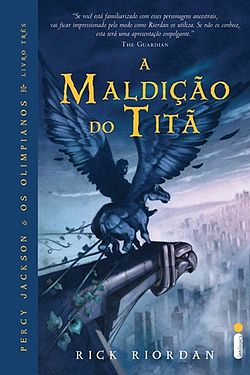
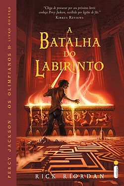
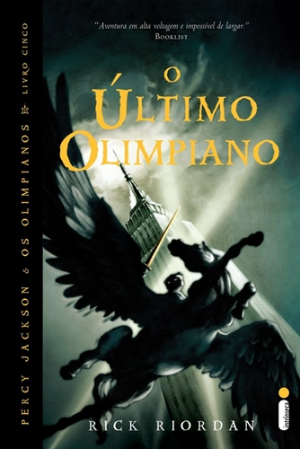

PERCY JACKSON E OS OLIMPIANOS: profecias
Os deuses do Olimpo continuam vivos em pleno século XXI! Eles ainda se apaixonam por mortais e têm filhos que podem se tornar grandes heróis, mas que acabam, na maioria das vezes, encontrando destinos terríveis nas garras de monstros sem coração. Apenas alguns descobrem sua identidade e conseguem chegar à Colina Meio-Sangue, um acampamento de verão dedicado ao treinamento de jovens semideuses.
Percy Jackson é um deles. Ele tem doze anos e há seis enfrenta problemas nas escolas por onde passa, não só por tirar notas baixas e por ter transtorno do déficit de atenção e dislexia, mas também por seus problemas sempre ocorrerem em circunstâncias estranhas.
Quando Percy descobre que é filho de Poseidon, o deus dos mares, sua vida ganha outro sentido! Só então sua trajetória heroica se inicia e ele é levado a enfrentar missões importantes que podem comprometer a sobrevivência de toda a humanidade.
Percy Jackson e o Ladrão de Raios
Percy Jackson descobriu que é filho do deus Poseidon, o Senhor do Mar, e agora segue em uma missão para encontrar quem roubou o raio-mestre de Zeus antes que seja responsabilizado por isso. Com a ajuda do sátiro Grover e de Annabeth, filha de Atena, Percy parte em uma viagem pelos Estados Unidos para capturar o ladrão e evitar uma guerra no Olimpo.
"Você irá para o Oeste, e enfrentará o deus que se tornou desleal
Você irá encontrar o que foi roubado, e o verá devolvido em segurança
Você será traído por aquele que o chama de amigo
E, no fim, irá fracassar em salvar aquilo que mais importa.
"
Percy Jackson e o Mar de Monstros
O acampamento dos semideuses está em perigo e a única coisa capaz de salvá-lo é o Velocino de Ouro. Nossos heróis partem em uma arriscada e incrível viagem pelo Mar de Monstros — que fica, adivinhe só: logo ali, no Triângulo das Bermudas! Lá, enfrentam seres fantásticos, muitos perigos e situações inusitadas.
"O modo como ele disse meu nome me deu um frio na espinha. Ninguém me chamava de Perseu, a não ser aqueles que conheciam minha verdadeira identidade. Amigos... e inimigos."
Percy Jackson e A Maldição do Titã

Um chamado do amigo Grover deixa Percy a postos para mais uma missão: dois novos semideuses foram encontrados e sua ascendência ainda é desconhecida. Cronos, o Senhor dos Titãs, arquitetou um de seus planos mais traiçoeiros, e Percy e seus amigos precisam encontrar a deusa Ártemis e salvar o Olimpo da destruição.
"A oeste, cinco buscarão a deusa acorrentada,
Um se perderá na terra ressecada,
A desgraça do Olimpo aponta a trilha,
Campistas e Caçadoras, cada um, brilha,
A Maldição do titã um deve sustentar,
E, pela mão do pai, um irá expirar."
Percy Jackson e A batalha do Labirinto

O tempo está se esgotando, e a batalha entre os deuses do Olimpo e Cronos, o Senhor dos Titãs, está cada vez mais próxima. Para impedir o ataque de Cronos ao Acampamento Meio-Sangue, Percy e seus amigos seguem pelo Labirinto de Dédalo, um interminável universo subterrâneo que a cada curva revela as mais temíveis surpresas.
"Descerás na escuridão do labirinto infinito,
O morto, o traidor e o perdido reerguidos.
Ascenderás ou cairás pelas mãos do rei espectral,
Da criança de Atena, a defesa final.
A destruição virá quando o último suspiro do herói acontecer..." <
Percy Jackson e o Último Olimpiano

O combate ganha as ruas de Manhattan. Os semideuses sabem que suas chances de vitória são pequenas. O exército de Cronos está cada vez mais poderoso. Os olimpianos precisam deter a fúria do monstro Tífon, enquanto Cronos avança em direção à cidade de Nova York, onde o Monte Olimpo está precariamente vigiado.
"Um meio-sangue dos deuses antigos filho,
Chegará aos dezesseis apesar de empecilhos
Num sono sem fim o mundo estará
E a alma do herói, a lâmina maldita ceifará
Uma escolha seus dias vai encerrar
O Olimpo preservar ou arrasar "